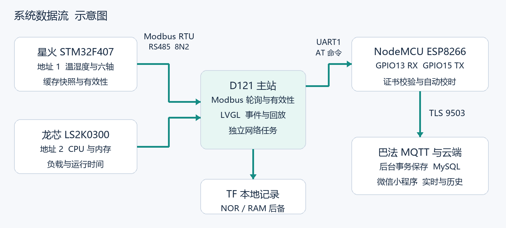

D121 演示讲解页
D121 PROJECT · 2026.10.25
D121 双节点设备监控终端
采集 记录 回放 云端追溯
- 星火环境与六轴数据
- 龙芯 CPU 内存和运行时间
- 本地记录与微信远程查看
D121 PROJECT · 2026.10.25
系统由哪些部分组成
两台从站 一台主站 一个网络出口

D121 PROJECT · 2026.10.25
正常数据如何流动
本地约 10 Hz 与 1 Hz 云端约每秒摘要
- 星火独立采样缓存，查询时复制
- 在线 新鲜 有效分别判断
- 云端摘要与 TF 六轴原始记录区分
D121 PROJECT · 2026.10.25
单站异常如何隔离
星火中断 龙芯继续 主站记录事件
- 软件停止星火应答约 3 秒
- 观察龙芯更新时间继续推进
- 恢复后保留中断与恢复事件
D121 PROJECT · 2026.10.25
上传暂停后如何补传
本地先保存 云端提交后确认
- 关键事件与事前有效摘要写入 NOR
- 恢复后重发，数据库按身份去重
- 收到相关确认后队列从有到零
D121 PROJECT · 2026.10.25
验证到了哪一步
实机 云端 用户手机三类证据
- 独立 Modbus 工具跨真实总线互通
- TLS CA 域名 有效期正反对照
- 云端 15 项与用户手机移动网络四项通过
D121 PROJECT · 2026.10.25
当前范围与边界
已经可演示的链路与后续扩展
- 长期观测按用户要求暂停
- 精细动作分类和完整离线波形上云未实现
- 小程序正式发布审核未验收
D121 PROJECT · 2026.10.25
回到现场看结果
两站在线 记录继续 队列清空
- 展示本轮事件详情及事前读数
- 运行 Check 确认恢复
- 版本 哈希 证据随交付包保留